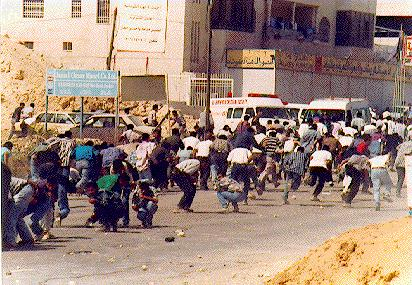
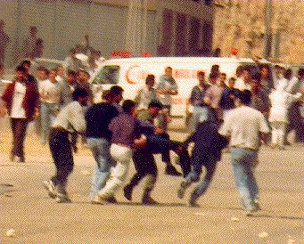
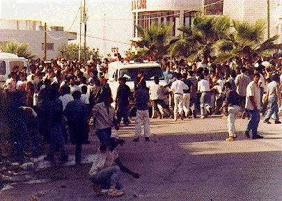
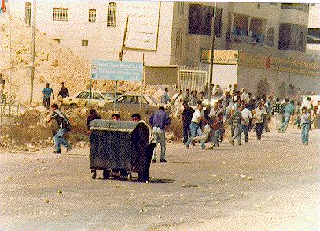

Photo Diary
Day 1: Wednesday 25th September 1996, "Casualties"

People scatter as rubber bullets slice up the street. Photo by Yasser Darweesh
______________________________________________________________________

Some demonstrators carry a wounded friend to a nearby ambulance. Photo by Yasser Darweesh
______________________________________________________________________

Even the route to the ambulances was dangerous. The injured demonstrator reaches the ambulance safely. A man wipes his eyes while grabbing another stone to throw at the Israelis. Photo by Yasser Darweesh
______________________________________________________________________

Some demonstrators used mobile sheilds, here a rubbish skip, to protect them from the rubber bullets.Photo by Yasser Darweesh
Click here for NEXT ENTRY
Click here for PHOTO DIARY
INDEX
_______________________________________________________
Website and related material from Birzeit University staff
High resolution photos available by request.
Contact nparry@admin.birzeit.edu.